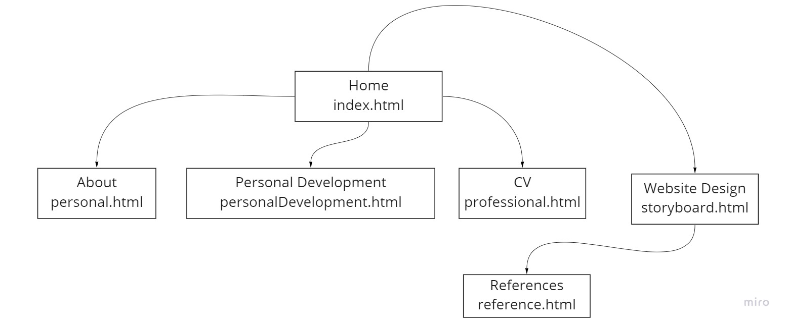

Creation of this Website
Site map
Wireframe
Story Board
Color Theme & Audience
The colors I chose for my website were two close shades of purple and white as white is known as a color for cleanliness,
simplicity while purple is known for luxury and dreams. They are also two of my favorite colors.
The audience intended for this website would be my school mates and teachers.
References
References can be found at Reference Page